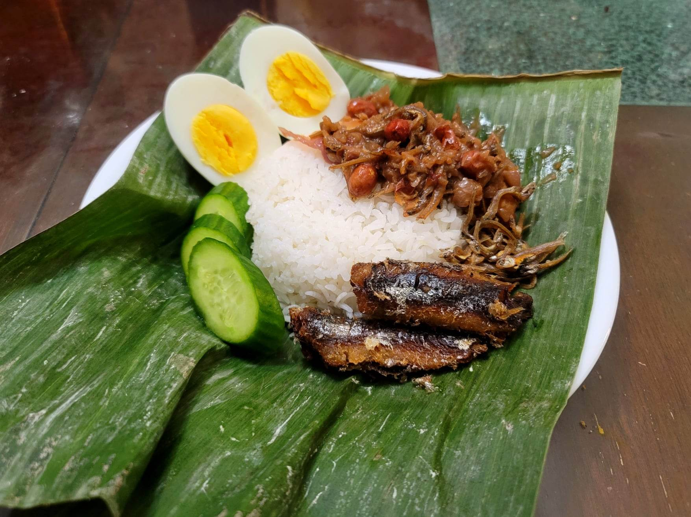

Nasi Lemak

Ingredients:
Coconut Rice:
- 2 cups Rice, uncooked, rinsed
- 3 Pandan leaves, tied into a knot
- Salt, to taste
- 150 - 180 ml Coconut milk
- Water, as needed
Sambal Ikan Bilis:
- 1 cup Dried anchovies, rinsed and then let dry
- Oil, for deep frying
- 1 clove Garlic
- 4 Shallots
- 10 Dried red chilies, deseeded
- 1 tsp Belacan
- 1 tbsp Canola oil
- 1/2 Red onion, sliced
- 1 cup Tamarind water
- 1/4 tsp Salt
- 1 tbsp Sugar
- 1/4 cup Roasted peanuts, preferably home roasted, still with skins
Other Ingredients/Toppings:
- Sardines, from can
- Hard boiled eggs, halved
- Cucumber, chopped
- Roasted peanuts
Instructions:
- Add the rinsed rice to a pot along with the coconut milk, salt, and water as needed. Add the pandan leaves to the pot and bring to a boil. Then cover and reduce the heat to low for about 10-15 minutes or until done.
- Place about 2-3 inches of oil into a pot and heat to about 350 degrees Fahrenheit. Add the dried anchovies and fry until light brown and crunchy. Periodically remove one anchovy to test for crunch and doneness. Then transfer to a paper towel lined plate.
- If serving with sardines, deep fry the sardines in the oil until lightly brown and crunchy. Then transfer to a paper towel lined plate.
- Add the garlic, shallots, chilies, and belacan to a food processor. Blend until it forms a smooth paste.
- Heat 1 tbsp oil in a pan or wok over medium-high heat. Add the spice paste and sauté until fragrant, about 2-3 minutes. Then add in the onion and sauté for about another 5 minutes. Add in fried anchovies, tamarind water, salt, and sugar. Reduce the heat to low and let simmer until it thickens to preference into a gravy. Then remove from heat and toss in the peanuts.
- Serve the rice hot with the sambal, sardines, eggs, cucumber, and more peanuts.